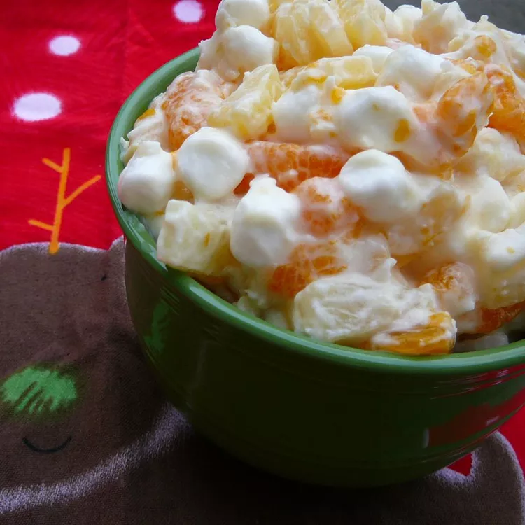

Fruit Salad

This Fruit Salad Recipe is sure to be a hit at any food gathering!
This recipe has been in my family for years and years. We make it at every
holiday family get together and everyone loves it! It's a great refreshing
fruit salad for every occasion, especially summer months and hot days.
Ingredients
- Dole Pineapple Tidbits
- Dole Mandarin Oranges
- Red Seedless Grapes (Halved)
- Small Marshmallows
- Sour Cream
Steps
-
Thouroghly drain the pineapple and mandarin orages and then add them in
large mixing bowl
- Wash and cut the Red Seedless Grapes and combine in mixing bowl
- Add Sour Cream and Marshmallows in mixing bowl
- Stir well, making sure to combine sour cream
- Refrigerate for a few hours before serving for best results